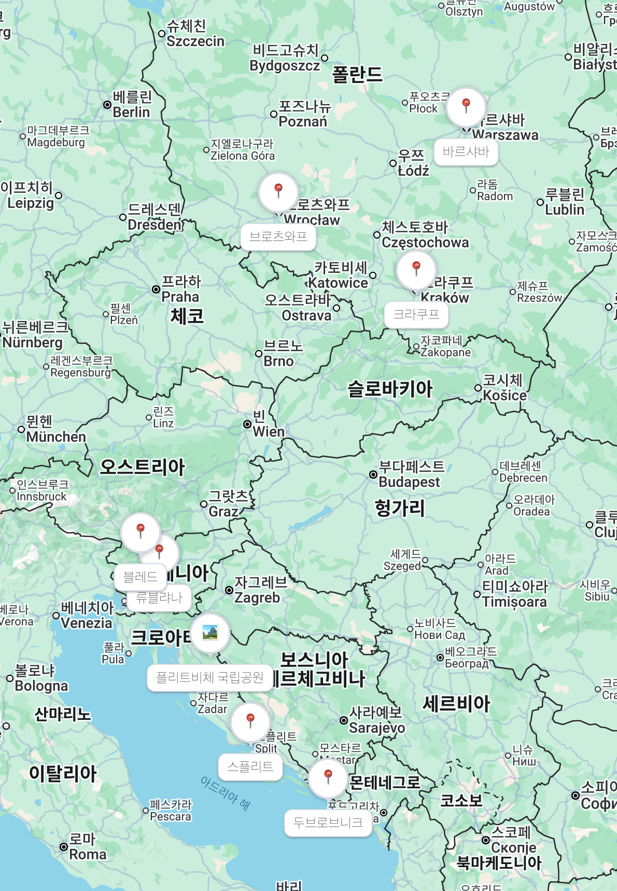

현재 일정의 장점
폴란드 핵심 도시 2곳, 슬로베니아의 류블랴나와 블레드, 크로아티아의 플리트비체, 스플리트, 두브로브니크를 모두 포함합니다. 렌터카는 필요한 구간에서만 사용해 비용과 피로도를 조정하는 계획입니다.
Travel Note · September 2026
2026년 9월 19일부터 10월 3일까지, 폴란드와 슬로베니아, 크로아티아를 잇는 여행 계획을 정리한 페이지입니다. 여행 전에는 계획과 준비 과정을, 여행 후에는 후기와 사진을 이어서 남깁니다.
첨부된 Notion export 내용을 바탕으로 1차 루트를 정리했습니다.
Notion export의 일정표를 공개 페이지용으로 정리했습니다.
| 날짜 | 도시/국가 | 이동 | 메모 |
|---|---|---|---|
| 9/19 토 | 바르샤바 폴란드 |
인천에서 바르샤바로 직항 항공 (LOT LO1098), 08:10 → 14:05, 약 12시간 55분 — 예약 완료 | 14:05 도착, 올드타운 산책 |
| 9/20 일 | 바르샤바 폴란드 |
현지 체류 | 왕궁, 올드타운, 와지엔키 공원 |
| 9/21 월 | 류블랴나 슬로베니아 |
바르샤바에서 직항 항공 (LOT), 11:10 → 12:45, 약 1시간 35분 | 낮 12:45 도착, 오후 구시가지 관광 |
| 9/22 화 | 류블랴나 / 블레드 슬로베니아 |
렌터카 수령 후 블레드 호수 왕복, 약 45분 | 블레드 호수 관광 |
| 9/23 수 | 플리트비체 크로아티아 |
류블랴나에서 렌터카 이동, 약 3시간 | 국립공원 관광 |
| 9/24 목 | 스플리트 크로아티아 |
플리트비체에서 렌터카 이동, 약 2.5~3시간 | 해안도로 드라이브 |
| 9/25 금 | 스플리트 크로아티아 |
현지 체류 | 디오클레티아누스 궁전, 리바 해변 산책 |
| 9/26 토 | 두브로브니크 크로아티아 |
스플리트에서 렌터카 이동, 약 3시간 | 성벽 야경 |
| 9/27 일 | 두브로브니크 크로아티아 |
현지 체류 | 성벽, 케이블카, 올드타운 |
| 9/28 월 | 크라쿠프 폴란드 |
두브로브니크에서 심야 직항 항공 (라이언에어), 22:50 → 익일 00:30, 약 1시간 40분 | 낮 두브로브니크 여유 관광, 렌터카 반납 후 심야 항공, 자정 넘어 크라쿠프 도착 |
| 9/29 화 | 크라쿠프 폴란드 |
현지 체류 | 구시가지 관광 |
| 9/30 수 | 크라쿠프 폴란드 |
현지 체류 | 비엘리치카 소금광산 또는 아우슈비츠 |
| 10/1 목 | 바르샤바 폴란드 |
크라쿠프에서 고속열차, 약 2시간 20분 | 오후 도착, 쇼핑, 기념품 구매, 여유 일정 |
| 10/2 금 | 귀국 | 바르샤바 13:15 → 브로츠와프 14:15 (LO3843) / 브로츠와프 16:45 → 인천 익일 10:55 (LO2005) — 예약 완료 | 국내선 연결 후 귀국, 10/3(토) 10:55 인천 도착 |

도시 간 이동만 따로 모아 실제 예약 전 확인하기 쉽게 정리했습니다.
여행 전에는 결정 포인트를, 여행 후에는 실제 후기를 업데이트합니다.
폴란드 핵심 도시 2곳, 슬로베니아의 류블랴나와 블레드, 크로아티아의 플리트비체, 스플리트, 두브로브니크를 모두 포함합니다. 렌터카는 필요한 구간에서만 사용해 비용과 피로도를 조정하는 계획입니다.
변경된 경로의 두 항공 구간 모두 직항이 확인되어 일정에 반영했습니다. 9/28 두브로브니크→크라쿠프 편이 심야편(22:50 출발, 익일 00:30 도착)이라 9/28 낮 시간을 두브로브니크에서 온전히 쓸 수 있는 장점이 있습니다. 대신 크라쿠프 숙소는 자정 이후 체크인이 가능한 곳으로 예약하고, 도착 시간 사전 공지가 필요합니다.
실제 이동 난이도, 좋았던 도시, 아쉬웠던 일정, 추천 장소, 다시 가고 싶은 코스를 여행 후 정리합니다. 사진은 대표 컷부터 순차적으로 추가합니다.
현재는 사진 자리만 준비했습니다. 여행 후 대표 사진을 추가할 예정입니다.